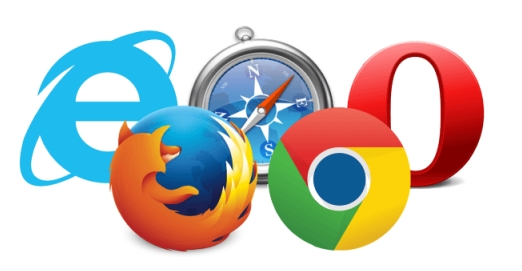
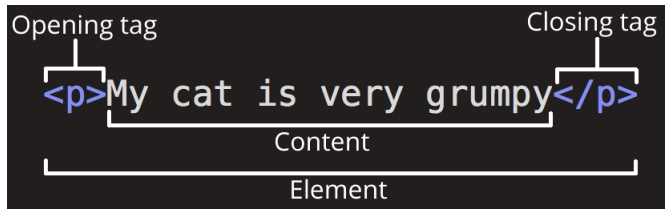

Веброзробка — це процес створення та підтримки вебсайт і вебзастосунок. Даний процес включає в себе різні етапи та технології, які дозволяють створювати інтерактивні та динамічні вебресурси. Веброзробка ділиться на два основні напрямки:
Будь-який вебзастосунок, якщо він працює в браузері, працює на 3 основних технологіях: HTML, CSS і JS.
Усі застосунки, якими ви користуєтеся в браузері: Google Apps, YouTube, Moodle - зроблені за допомогою цих технологій.
Але будь-який складний застосунок - це не тільки картинка в браузері, це ще й дані, які користувачі використовують або створюють. Ці дані потрібно вміти зберігати, обробляти і виводити.
Зберіганням і обробкою даних зазвичай займається сервер або бекенд.
Бекенд (Backend) - область вебтехнологій, що працюють на сервері, а також внутрішня частина серверної системи, що займається обробкою даних.
А архітектура, в якій беруть участь сервер (Backend) і клієнт (браузер, Frontend) називається клієнт-серверною.
Архітектура - це опис системи на найвищому рівні.
Тобто під час опису архітектури ми не вдаємося в подробиці кожного конкретного модуля, а скоріше описуємо їхню взаємодію між собою, «фіксуємо домовленості» поведінки кожного з них.
Клієнт-серверна архітектура описує, як взаємодіють між собою клієнт (у нашому випадку Frontend) і сервер (Backend).
Клієнт звертається із запитами до сервера.
Запити можуть бути різні. Клієнт може попросити сервер віддати якісь дані або попросити їх якось підготувати перед віддачею. Або ж може попросити сервер зберегти щось, що передасть разом із запитом сам.
Роль клієнта для сервера в тому, щоб повідомити серверу, що потрібно зробити з даними, які зберігаються в базі, або з даними, які він передає.
Роль клієнта для користувача в тому, щоб представити дані в зручному вигляді та надати механізми для їх оновлення.
Сервер приймає запити від клієнта.
Його роль у тому, щоб зберігати інформацію від клієнта в базі даних (БД), обробляти її та надавати до неї доступ за деякими правилами. Такі правила зазвичай називаються бізнес-логікою.
На сервері, крім спілкування з клієнтом, можуть запускатися якісь фонові завдання, наприклад, індексування інформації в базі даних для швидшого пошуку або запуск автоматичних email-розсилок.
БД - це сховище всієї користувацької та службової інформації. Її роль у тому, щоб забезпечувати швидкий і безперебійний доступ до цієї інформації та власне зберігання.
На клієнт-серверній архітектурі побудована більша частина застосунків. Однак перші застосунки все ж трохи відрізнялися від нинішніх у деталях реалізації. Головною відмінністю було повне перезавантаження сторінки у відповідь на будь-яку дію.
Найперші вебзастосунки не сильно відрізнялися від звичайних сайтів.
По суті це і були сайти, тому що вся бізнес-логіка реалізовувалася на сервері. Клієнт лише показував результат у вигляді HTML-сторінок користувачеві і надсилав запити на інші сторінки.
Банальний вибір сортування списку або таблиці вимагав перезавантаження сторінки. Зараз це виглядає не сучасно, але перші додатки працювали винятково таким чином просто тому, що в браузерах не було інструменту для альтернативного спілкування.
На початку нульових з'явився так званий «WEB 2.0», з яким прийшов AJAX.
AJAX (Asynchronous JavaScript and XML) - спілкування між клієнтом і сервером без перезавантаження сторінки.
Коли ми говоримо, що якийсь застосунок використовує AJAX, ми маємо на увазі, що під час натискання, наприклад, на кнопку сортування списку або таблиці, сторінка не перезавантажиться, а сортування відбудеться ніби «на фоні».
Під час натискання браузер надішле запит на сервер, у якому повідомить, що йому необхідно відсортувати такий-то список за таким-то критерієм.
Сервер обробить запит, дістане потрібні дані, відсортує їх і надішле клієнту готовий шматок інтерфейсу, який клієнт уже вставить у документ.
Зауважте, що ми все ще не передаємо дані в чистому вигляді. Зараз на клієнті ми приймаємо шматок HTML-розмітки, який потім вбудовуємо в потрібне місце в документі.
У сучасних застосунках між клієнтом і сервером спілкування будується саме на даних, а не на відрендерених шматках розмітки. Найчастіше для такого спілкування обирають JSON. Зараз більша частина додатків працює так:
JSON (JavaScript Object Notation) - один із найпопулярніших форматів даних. Він небагатослівний, зрозумілий і людині, і комп'ютеру, багато мов із ним уже вміють працювати. JSON wiki.
У вебі JSON, можна сказати, стандарт, тому що використовується як формат за замовчуванням у багатьох фреймворках.
Як ми пам'ятаємо, клієнт-серверна архітектура будується на запитах і відповідях. Розберемося, що використовує браузер, щоб послати на сервер якийсь запит.
На рівні застосунку ми використовуємо вбудоване браузерне API, а саме - fetch(). Це глобальний метод для надсилання запитів.
Основні HTTP-методи: GET, POST, PATCH, PUT, DELETE.
Вони вказують, яку дію ми хочемо виконати. Метод POST - повідомить серверу, що ми хочемо створити новий ресурс і зберегти в нього вміст body.
Якби ми хотіли отримати якийсь ресурс, ми б використовували GET. Для редагування - PATCH, для заміни - PUT, а для видалення - DELETE.
HTTP-метод використовується в протоколі HTTP - протоколі передавання даних, яким за замовчуванням користуються браузери під час спілкування із сервером.
Протокол — це певний набір правил або угод, який визначає, як відбуватиметься обмін даними. HTTP було розроблено як протокол обміну даними між вебсервером і веббраузером. Це протокол прикладного рівня моделі OSI, який використовується для передавання між клієнтом і сервером файлів HTML, CSS, JS, API, картинок, аудіо, відео, введених користувачем даних та іншого. Клієнт (веб-браузер) надсилає серверу (веб-серверу) запити й отримує від нього відповіді. Сервер у рамках протоколу HTTP практично завжди займає пасивну позицію.
Є три головні об'єкти, які обмінюються повідомленнями:
На першому етапі клієнт встановлює з'єднання із сервером за допомогою протоколу транспортного рівня TCP (Transmission Control Protocol). Клієнт може перевикористовувати одне й те саме з'єднання для роботи із сервером або створювати його щоразу. Це залежить від завдання, конфігурації мережі та конкретних налаштувань обладнання. Після встановлення з'єднання клієнт надсилає HTTP-повідомлення з тілом і параметрами запиту. Сервер приймає це повідомлення і на підставі логіки роботи бекенда формує і відправляє HTTP-повідомлення відповіді.
Протокол HTTP не зберігає стан, тому кількість з'єднань не призводить до істотного ускладнення взаємодії між об'єктами системи. Однак існує поняття сесії, за допомогою якої можна передавати й зберігати необхідні дані, що належать до конкретного сеансу зв'язку. Дані сесії зберігаються на клієнті та на сервері. Наприклад, доступний ідентифікатор сесії, який дає змогу не проводити авторизацію клієнта під час кожного звернення до сервера.
Часто для зберігання даних про сесію використовують Cookie.
Проксі-сервери здійснюють сервісні функції:
HTTP-повідомлення являє собою звичайний текст. Структура повідомлення строго визначена:
Стартовий рядок запиту містить інформацію про метод запиту, відносну адресу та версію протоколу у форматі Метод URI HTTP/Версія. Стартовий рядок відповіді містить версію протоколу, код і статус відповіді сервера у форматі HTTP/Версія Код Статус.
Коли браузер надсилає запит на відкриття головної сторінки сайту, стартовий рядок запиту буде таким: GET /
HTTP/1.1
Якщо сторінка існує і до неї є доступ, то стартовий рядок відповіді буде таким: HTTP/1.1 200 OK
Код стану у відповіді сервера містить інформацію про результат обробки даних. Існує п'ять класів кодів станів (Status Code Registry, HTTP Status Codes Glossary):
Заголовки поділяються на чотири групи:
У заголовках вказується різна необхідна для роботи вебсервера або клієнта інформація. Наприклад, є адреса домену, до якого звертається клієнт або інформація про авторизацію користувача. Також заголовки можуть містити інформацію про налаштування кешування на клієнті та сервері, формат переданих даних, мову, останню дату і час модифікації даних тощо.
Формат даних тіла повідомлення може бути декількох типів, які закріплені в специфікаціях HTTP-протоколу різних версій (HTTP/1.0 (стандарт RFC 1945), HTTP/1.1 (стандарт RFC 2616), HTTP/2 (чернетка стандарту), HTTP/3 (чернетка стандарту)). Найчастіше зустрічаються типи:
REST (Representational State Transfer) - стиль спілкування компонентів, за якого всі необхідні дані вказуються в параметрах запиту.
Відмітна особливість цього стилю - це стиль побудови адрес і вибір методу.
Наприклад, метод і адреса для створення користувача
могли б виглядати так:
POST /api/users
Для отримання конкретного користувача:
GET /api/users/1
(Де 1 - це ID користувача.)
Для редагування даних про користувача:
PATCH /api/users/1
Для видалення даних:
DELETE /api/users/1
Коли ви вводите вебадресу у свій браузер (для нашої аналогії - відвідуєте магазин):
Коли ви вводите вебадресу у свій браузер (для нашої аналогії - відвідуєте магазин):
Реальні вебадреси - незручні, незабутні рядки, які ви вводите в адресний рядок, щоб знайти ваші улюблені вебсайти. Ці рядки складаються з чисел, наприклад: 63.245.215.20.
Такий набір чисел називається IP-адресою і являє собою унікальне місце розташування в Інтернеті. Утім, його не дуже легко запам'ятати, правда? Ось чому винайшли DNS. Це спеціальні сервери, які пов'язують вебадресу, яку ви вводите в браузері (наприклад, «mozilla.org»), з реальною IP-адресою сайту.
Сайти можна знайти безпосередньо через їхні IP-адреси. Ви можете знайти IP-адресу вебсайту, ввівши його домен в інструмент, як IP Checker.
Bonus: Як працює DNS.
HTML - HyperText Markup Language
Мова для створення розмітки документів, з яких складаються вебсторінки в браузері з метою забезпечення їх простоти. Всі вебсторінки складаються з html елементів, які формують їх.
HTML файл може бути створений та відредагований у будь-якому текстовому редакторі або IDE.
HTML5 — наступна версія мови HTML.
Що включає HTML5:
Елементами header є заголовки розділів. Вони можуть складатися з декількох частин — наприклад, було б виправдано розділяти блок заголовка на підзаголовки, історію версій або вказання авторства. Елемент footer визначає нижню частину розділу, до якого він відноситься. Зазвичай він містить інформацію про розділ — наприклад, ім'я автора, посилання на схожі документи, копірайт і тому подібне. Блок nav містить список посилань для навігації. Підходить, наприклад, для навігації по сайту, або для змісту. Елемент aside підходить для розміщення вмісту яким-небудь чином спорідненого основному контенту. У звичайному випадку буде корисний для розмітки бічної колонки. Тег section представляє загальний розділ документа або додатку, наприклад, такий як розділ. Тег article відзначає незалежний розділ документа, сторінки або сайту. Застосуємо для такого вмісту як новини, запису блога, повідомлення у форумі або коментарі користувачів.
Текстовий редактор — програма, призначена до роботи з текстовими файлами, передбачаючи: створення редагування, пошук інформації та т.п.
Інтегроване середовище розробки (integrated development environment IDE) — комплексне програмне рішення для розробки програмного забезпечення. Зазвичай, складається з редактора початкового коду, інструментів для автоматизації складання та відлагодження програм.
Браузер – програма для перегляду сторінок та комп'ютерних каталогів з метою вирішення різноманітних завдань
Тег- елемент мови розмітки гіпертексту, визначаючий роль вмісту між відкриваючим і закриваючим тегами цього елемента.

<h1>Контент</h1>
<p>Контент</p>
<br>
<hr>
<!DOCTYPE html> - оголошує тип документа як HTML
формат і містить інформацію для браузера
використовуваної версії.
<html> контейнер для основних тегів <head> і
<body>, та решти html-елементів веб сторінки.
<head> містить інформацію про сторінку HTML
документа в метатегах як <title>, <meta> та
інші.
<body> контейнер вмісту для всього тіла
документа, який буде відображено користувачеві
на сторінці.
Самостійна робота: